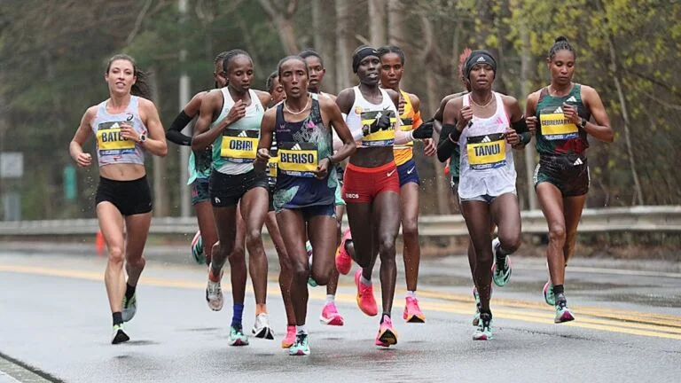
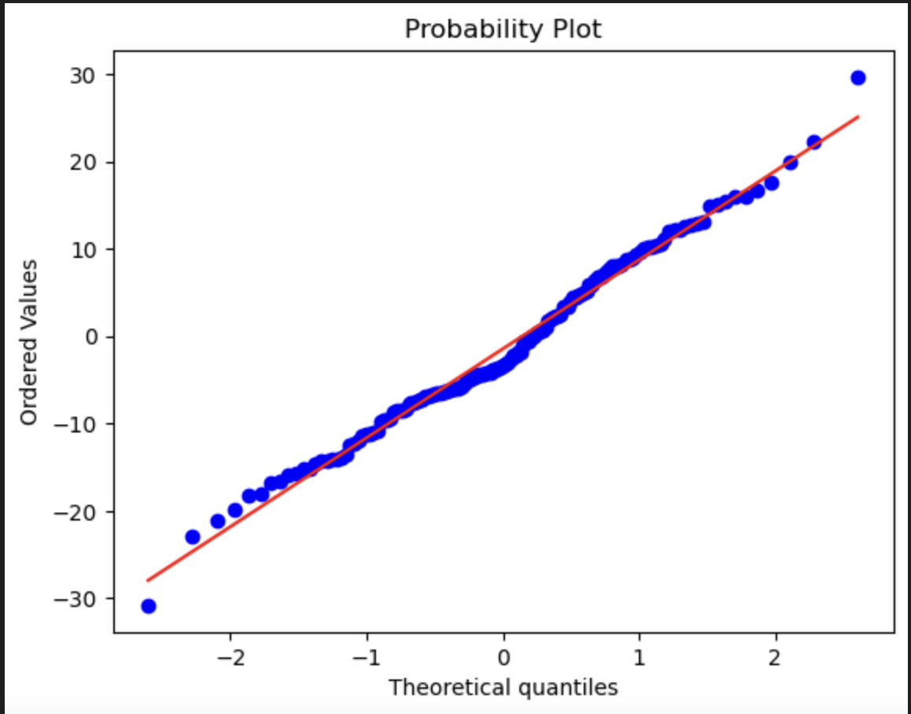

August 2025
An end-to-end AI-powered caption recommendation system that leverages CLIP embeddings for cross-modal (image-to-text) semantic search across a custom 3000+ caption database. I designed and implemented a diversity-ranking algorithm to ensure varied, contextually relevant caption suggestions and the system is a Streamlit application.


An end-to-end system using a Random Forest model to achieve 98.6% accuracy in predicting employee churn, deployed with a Tkinter GUI for HR professionals.

In-depth EDA on a dataset of over 7 million marathon runners, uncovering trends in performance across different demographics using Python visualization libraries.
An optimized implementation of the SDXL Turbo text-to-image model, featuring hardware-aware device mapping, model caching, and memory offloading.

Utilized simple linear regression to predict yearly spending by e-commerce customers, helping inform business strategy for app vs. website development.
Developed a robust house price prediction model using an XGBoost Regressor, involving comprehensive feature engineering and data preprocessing to accurately estimate property values.
A classic dataset project involving comprehensive data cleaning, feature engineering, and building a logistic regression model for survival prediction.

Built and trained a Convolutional Neural Network (CNN) from scratch using Keras to classify images of cats and dogs, demonstrating foundational computer vision skills.